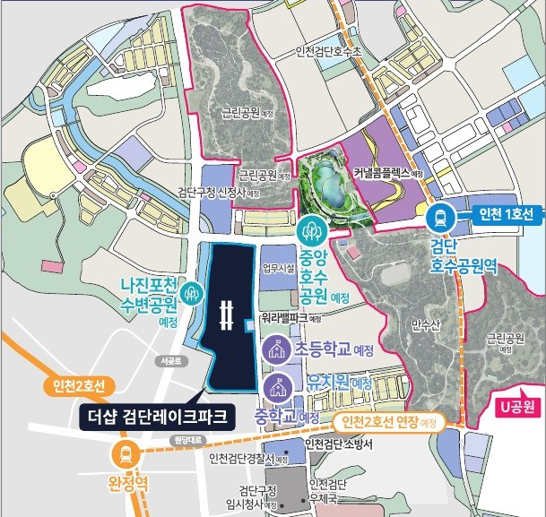
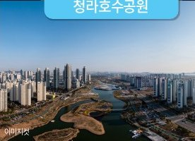
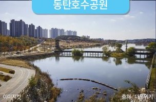
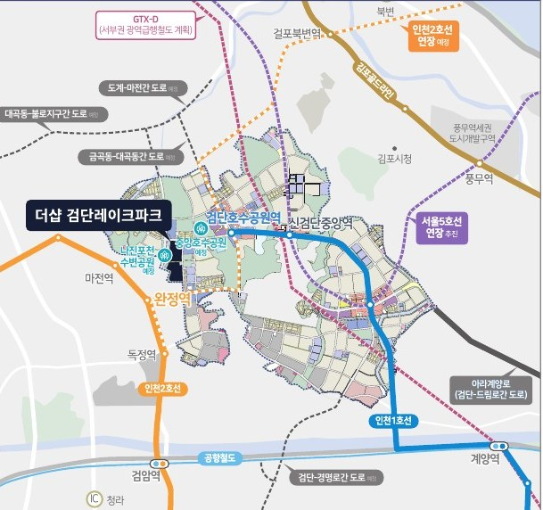
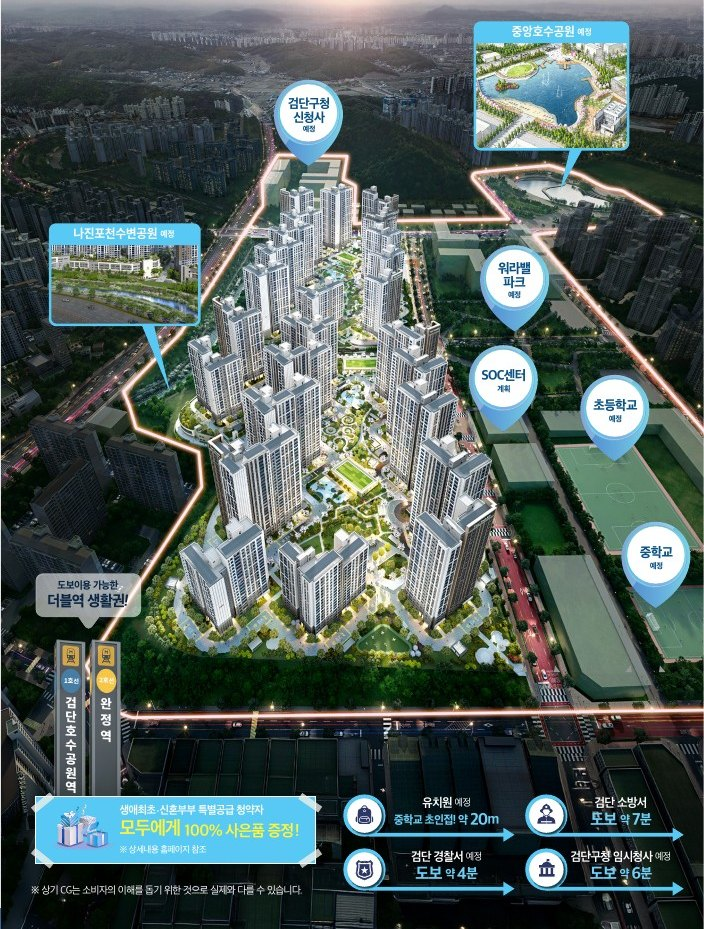
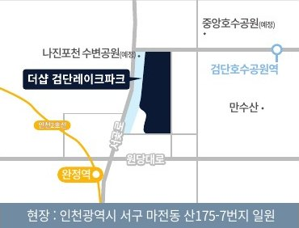

검단 그 변화의 정점에서 만나는 더샵

인생의 첫 단추, 더·레·파에서!생애최초 특별공급 배정538세대
더샵 가족의 출발, 더·레·파에서!신혼부부 특별공급 배정651세대
※ 특별공급, 일반공급(1·2순위) 인천 50%, 서울·경기 50% 배정됩니다.
수변특권의 정점에 선 검단 첫 더샵출·퇴근 시간의 여유를 넘어
두 개의 수변공원까지 더한
삶의 여유
posco포스코이앤씨


※ 상기 사진은 이미지컷이며, 동탄호수공원 사진 출처는 나무위키입니다. 수치는 리플렛 표기 기준입니다.
수변특권의 정점에 선 검단 첫 더샵

※ 특별공급, 일반공급(1·2순위) 인천 50%, 서울·경기 50% 배정됩니다.

※ 상기 지역도는 실제와 다를 수 있으며, 지역도에 기재된 교통 및 각종 개발계획, 학군 배정 등은 사업주체나 해당기관의 사정에 따라 변경 또는 연기, 취소될 수 있으며 이는 시행사 및 시공사와 무관합니다.
나진포천 수변공원
중앙호수공원(예정)
검단 첫 번째 더샵
2,857세대
검단 유일 1,2호선
더블역 생활권

생애최초·신혼부부 특별공급 청약자 모두에게 100% 사은품 증정! ※ 상세내용 홈페이지 참조
※ 상기 CG는 소비자의 이해를 돕기 위한 것으로 실제와 다를 수 있습니다.
6월 오픈 예정
59㎡ 1,337세대 · 84㎡ 1,520세대
지하 3층 ~ 지상 29층, 26개동 · 총 2,857세대


※ 본 아파트의 하자 등에 따른 피해보상은 관계법령에 의거 적용됩니다. ※ 본 홍보물의 CG 및 이미지, 내용, 문구 등은 실제와 다를 수 있습니다. ※ 세부 설계내용은 향후 인허가 과정에서 변동될 수 있습니다.